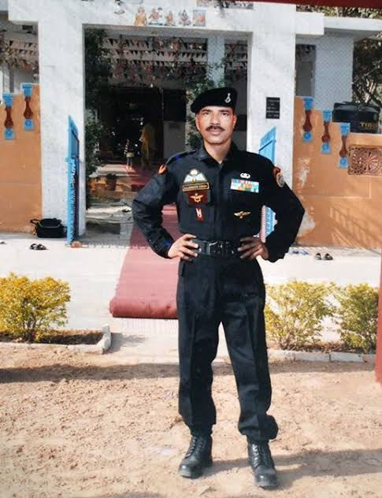

In the picturesque town of Dehradun, Uttarakhand, a hero was born on July 1, 1972. Havaldar Gajendra Singh Bisht, a name that would become synonymous with bravery and sacrifice, took his first breath in the quaint village of Ganeshpur.

As he grew up, Gajendra's strong sense of duty and patriotism led him to join the Indian Army. He was determined to serve his country and protect its people. His dedication and perseverance earned him a place in the elite National Security Guard (NSG), a special forces unit tasked with counter-terrorism operations.
It was the night of November 26, 2008, and the city of Mumbai was under attack. Terrorists had stormed several iconic buildings in South Mumbai, including the Jewish center of Nariman House. The terrorists took many innocent people hostage, subjecting them to a traumatic ordeal that would last for two days.
Hav Gajendra Singh, a brave member of the National Security Guard's 51 Special Action Group, was part of the team tasked with resolving this crisis. Along with his fellow NSG commandos, Hav Gajendra Singh was airdropped from a helicopter onto the roof of Nariman House. Their mission was to neutralize the terrorists and rescue the hostages.

Under Hav Gajendra Singh's leadership, the team successfully extricated 14 civilians, transporting them to safer locations. But the mission was far from over. Hav Gajendra Singh moved to confront the terrorists, who were positioned to engage the assault team. He spotted one terrorist attempting to flee and fired at him. However, another terrorist hurled a grenade, seriously wounding Hav Gajendra Singh.
Despite his injuries, Hav Gajendra Singh refused to back down. He realized that his team needed to seize the opportunity to dominate the situation, and he continued moving forward, firing at the terrorists. His courageous act and unyielding spirit inspired his comrades to eliminate the terrorists and complete the mission successfully.

Hav Gajendra Singh's bravery came at a great cost. He succumbed to his injuries, but his sacrifice will never be forgotten. He was posthumously awarded the Ashok Chakra, the nation's highest peacetime gallantry award, for his exceptional bravery, indomitable spirit, and supreme sacrifice. Hav Gajendra Singh is survived by his wife Vinita Devi, daughter Preeti, and son Gaurav.
English